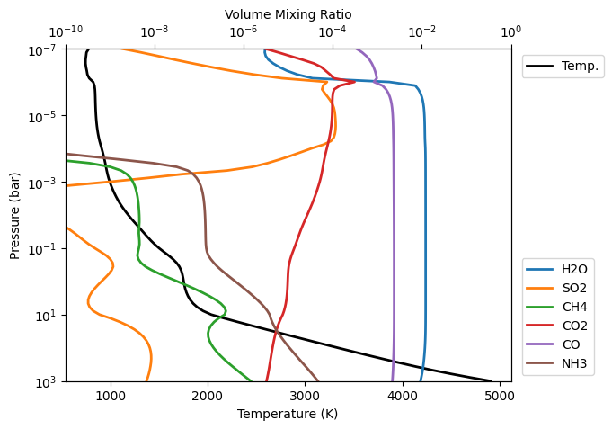
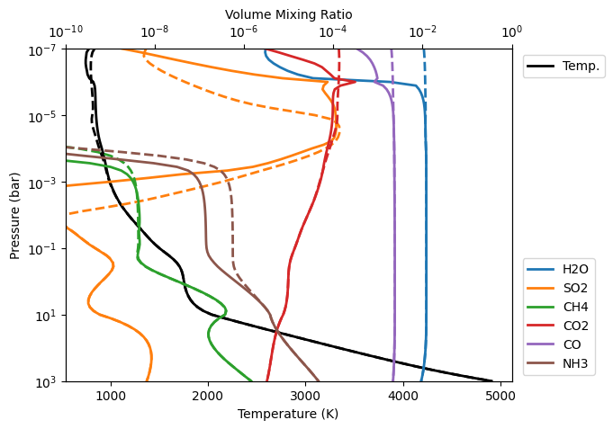

Self Consistent Photochemistry and Climate with Photochem
This notebook will take us through how to run a self-consistent radiative-convective-photochemical-equilibrium (RCPE) model with PICASO and Photochem.
For a more in depth look at the photochem code check out Wogan et al. 2025 (note this should also be cited along with Mang et al. 2026 if using this code/tutorial).
Here, we will use WASP-39 b as an example. We will begin by importing several packages required for the run.
[1]:
from picaso import justplotit as jpi
from picaso import justdoit as jdi
import warnings
warnings.filterwarnings("ignore")
import picaso.photochem as picasochem
import numpy as np
import matplotlib.pyplot as plt
%matplotlib inline
from astropy import constants as const
from astropy import units as u
import pandas as pd
WARNING: Failed to load Vega spectrum from /data/reference_data/picaso/ref4/stellar_grids/calspec/alpha_lyr_stis_011.fits; Functionality involving Vega will be severely limited: FileNotFoundError(2, 'No such file or directory') [stsynphot.spectrum]
The following cell generates a reaction network, thermodynamic file and UV spectrum required for running photochem.
[2]:
# Generate files needed for Photochem
# Reaction and Thermodynamic files
picasochem.generate_photochem_rx_and_thermo_files(
atoms_names=['H','He','N','O','C','S'], # Atoms to include
rxns_filename='photochem_rxns.yaml',
thermo_filename='photochem_thermo.yaml'
)
# Stellar Spectrum. Here we choose TOI-193, a sensible
# Proxy for WASP-39 b. We have to set the Teq so that the
# Spectrum is scale to the planet.
from photochem.utils import stars
wv, F = stars.muscles_spectrum(
'TOI-193',
outputfile='TOI-193.txt',
Teq=1166
)
Downloading the spectrum at the following URL: https://mast.stsci.edu/api/v0.1/Download/file?uri=mast:HLSP/muscles/v23-v24/toi-193/hlsp_muscles_multi_multi_toi-193_broadband_v24_adapt-const-res-sed.fits
Initialize an opacity class, specifying the molecules you want to include opacities for.
[3]:
opacity_ck = jdi.opannection(
method='resortrebin',
preload_gases='all'
)
Initialize a calculation, specifying WASP-39 b parameters.
[4]:
def make_inputs(kz=1e8, filename_guess=None):
# Start a calculation
cl_run = jdi.inputs(calculation="planet", climate=True) # start a calculation
# Gravity
r_planet = (1.332*const.R_jup).to(u.cm).value
m_planet = (0.28*const.M_jup).to(u.g).value
cl_run.gravity(
radius=r_planet,
radius_unit=u.cm,
mass=m_planet,
mass_unit=u.g
)
# Effective Temp
tint = 200 # Intrinsic Temperature of your Planet in K
cl_run.effective_temp(tint) # input effective temperature
# Star
T_star = 5485 # K, star effective temperature
logg = 4.45 # logg , cgs
metal = 0.01 # metallicity of star
r_star = 0.92 # solar radius
semi_major = 0.049 # star planet distance, AU
cl_run.star(
opacity_ck,
temp=T_star,
metal=metal,
logg=logg,
radius=r_star,
radius_unit=u.R_sun,
semi_major=semi_major,
semi_major_unit=u.AU,
database="phoenix"
)
# Guess the initial P-T profile
nlevel = 91 # number of plane-parallel levels in your code
if filename_guess is None:
Teq = T_star*np.sqrt(0.5*r_star*0.00465047/semi_major)
pt = cl_run.guillot_pt(
Teq,
nlevel=nlevel,
T_int=tint,
p_bottom=3.0,
p_top=-7
)
temp_guess = pt['temperature'].values
pressure = pt['pressure'].values
else:
df1 = pd.read_csv("W39b_+1.0_0.3_kzz8",sep="\t")
temp_guess = df1['temperature'].values
pressure = df1['pressure'].values
rcb_guess = 78
rfacv = 0.5 # Heat-redistribution
# Set climate inputs
cl_run.inputs_climate(
temp_guess=temp_guess,
pressure=pressure,
rcb_guess=rcb_guess,
rfacv=rfacv
)
# Below, we will provide the inputs required to run photochem.
# The key things to change are planet mass, planet radius,
# stellar XUV flux file.
photochem_init_args={
'mechanism_file': "photochem_rxns.yaml",
'thermo_file': "photochem_thermo.yaml",
'stellar_flux_file': "TOI-193.txt",
'P_ref': 1e6, # dynes/cm^2
'TOA_pressure': 1e-8*1e6 #dynes/cm^2
}
cl_run.atmosphere(
mh=10,
cto_relative=0.3,
chem_method='photochem',
photochem_init_args=photochem_init_args
)
# Grab the Photochem object and adjust any settings if needed
pc = cl_run.inputs['climate']['pc']
pc.var.conv_longdy = 0.05 # relax convergence criteria for photochem.
# Set the Kzz profile.
cl_run.inputs['atmosphere']['profile']['kz'] = kz # cm^2/s
return cl_run
cl_run = make_inputs()
Now run the model. This might take a looongg time. So please be patient.
[5]:
out = cl_run.climate(
opacity_ck,
save_all_profiles=True,
save_all_kzz=False,
self_consistent_kzz=False,
diseq_chem=True
)
SUMMARY
-------
Clouds: False
quench False
cold_trap False
vol_rainout False
no_ph3 False
Moist Adiabat: False
Computed quenched levels at {'CO-CH4-H2O': np.int64(50), 'CO2': np.int64(35), 'NH3-N2': np.int64(54), 'HCN': np.int64(50), 'PH3': np.int64(45)}
Running photochem
nsteps = 100 longdy = 1.5e+00 max_dT = 9.4e-01 max_dlog10edd = 0.0e+00 TOA_pressure = 1.1e-08
nsteps = 200 longdy = 1.2e+01 max_dT = 9.4e-01 max_dlog10edd = 0.0e+00 TOA_pressure = 1.1e-08
nsteps = 300 longdy = 1.9e+01 max_dT = 9.4e-01 max_dlog10edd = 0.0e+00 TOA_pressure = 1.1e-08
nsteps = 400 longdy = 7.3e+01 max_dT = 9.4e-01 max_dlog10edd = 0.0e+00 TOA_pressure = 1.2e-08
nsteps = 500 longdy = 5.4e+01 max_dT = 9.4e-01 max_dlog10edd = 0.0e+00 TOA_pressure = 1.2e-08
nsteps = 600 longdy = 1.9e+01 max_dT = 9.4e-01 max_dlog10edd = 0.0e+00 TOA_pressure = 1.3e-08
nsteps = 700 longdy = 4.3e+02 max_dT = 9.4e-01 max_dlog10edd = 0.0e+00 TOA_pressure = 1.4e-08
nsteps = 800 longdy = 5.7e+01 max_dT = 9.4e-01 max_dlog10edd = 0.0e+00 TOA_pressure = 1.9e-08
nsteps = 900 longdy = 9.5e+01 max_dT = 9.4e-01 max_dlog10edd = 0.0e+00 TOA_pressure = 3.4e-08
nsteps = 1000 longdy = 4.6e+05 max_dT = 9.4e-01 max_dlog10edd = 0.0e+00 TOA_pressure = 5.1e-08
nsteps = 1100 longdy = 1.2e+01 max_dT = 9.0e-01 max_dlog10edd = 0.0e+00 TOA_pressure = 3.6e-08
nsteps = 1200 longdy = 7.9e+03 max_dT = 9.1e-01 max_dlog10edd = 0.0e+00 TOA_pressure = 5.3e-08
nsteps = 1300 longdy = 7.7e+05 max_dT = 9.1e-01 max_dlog10edd = 0.0e+00 TOA_pressure = 7.4e-08
nsteps = 1400 longdy = 6.8e+05 max_dT = 9.1e-01 max_dlog10edd = 0.0e+00 TOA_pressure = 8.8e-08
nsteps = 1500 longdy = 4.7e+05 max_dT = 9.1e-01 max_dlog10edd = 0.0e+00 TOA_pressure = 9.0e-08
nsteps = 1600 longdy = 2.1e+00 max_dT = 9.8e-01 max_dlog10edd = 0.0e+00 TOA_pressure = 1.0e-07
nsteps = 1700 longdy = 1.6e+02 max_dT = 1.1e+00 max_dlog10edd = 0.0e+00 TOA_pressure = 1.1e-07
nsteps = 1800 longdy = 6.8e+01 max_dT = 1.1e+00 max_dlog10edd = 0.0e+00 TOA_pressure = 9.9e-08
nsteps = 1847 longdy = 4.9e-02 max_dT = 1.1e+00 max_dlog10edd = 0.0e+00 TOA_pressure = 9.7e-08
nsteps = 1947 longdy = 3.5e+00 max_dT = 1.4e+00 max_dlog10edd = 0.0e+00 TOA_pressure = 6.8e-09
nsteps = 2047 longdy = 1.6e+01 max_dT = 1.4e+00 max_dlog10edd = 0.0e+00 TOA_pressure = 6.8e-09
nsteps = 2147 longdy = 9.1e+00 max_dT = 2.5e+00 max_dlog10edd = 0.0e+00 TOA_pressure = 7.2e-09
nsteps = 2247 longdy = 3.1e+01 max_dT = 4.6e+00 max_dlog10edd = 0.0e+00 TOA_pressure = 8.3e-09
nsteps = 2347 longdy = 1.4e+01 max_dT = 4.9e+00 max_dlog10edd = 0.0e+00 TOA_pressure = 8.5e-09
nsteps = 2447 longdy = 1.3e+01 max_dT = 4.9e+00 max_dlog10edd = 0.0e+00 TOA_pressure = 8.5e-09
nsteps = 2547 longdy = 1.1e+01 max_dT = 4.9e+00 max_dlog10edd = 0.0e+00 TOA_pressure = 8.6e-09
nsteps = 2624 longdy = 4.6e-02 max_dT = 5.4e+00 max_dlog10edd = 0.0e+00 TOA_pressure = 9.0e-09
nsteps = 2724 longdy = 1.2e-01 max_dT = 8.8e-01 max_dlog10edd = 0.0e+00 TOA_pressure = 6.3e-09
nsteps = 2824 longdy = 1.1e-01 max_dT = 1.6e+00 max_dlog10edd = 0.0e+00 TOA_pressure = 6.3e-09
nsteps = 2924 longdy = 4.9e-04 max_dT = 1.6e+00 max_dlog10edd = 0.0e+00 TOA_pressure = 6.2e-09
nsteps = 2925 longdy = 3.4e-04 max_dT = 1.6e+00 max_dlog10edd = 0.0e+00 TOA_pressure = 6.2e-09
Iteration number 0 , min , max temp 977.1418185556998 3934.257078253487 , flux balance 94.11582825033031
Iteration number 1 , min , max temp 794.0533449358298 5199.9 , flux balance 11.43880695137313
Iteration number 2 , min , max temp 740.0721287250942 4796.06219440376 , flux balance 0.3793859512749696
Iteration number 3 , min , max temp 734.6497467935089 4686.952541568092 , flux balance 0.003246643203659575
Iteration number 4 , min , max temp 734.5698165376314 4680.651628443463 , flux balance 1.5944409923947934e-05
In t_start: Converged Solution in iterations 4
Computed quenched levels at {'CO-CH4-H2O': np.int64(51), 'CO2': np.int64(36), 'NH3-N2': np.int64(55), 'HCN': np.int64(51), 'PH3': np.int64(44)}
Running photochem
nsteps = 100 longdy = 4.1e-01 max_dT = 1.1e+01 max_dlog10edd = 0.0e+00 TOA_pressure = 1.2e-08
nsteps = 200 longdy = 7.5e-01 max_dT = 1.1e+01 max_dlog10edd = 0.0e+00 TOA_pressure = 1.2e-08
nsteps = 300 longdy = 1.7e+01 max_dT = 1.2e+01 max_dlog10edd = 0.0e+00 TOA_pressure = 1.2e-08
nsteps = 400 longdy = 4.9e+01 max_dT = 1.3e+01 max_dlog10edd = 0.0e+00 TOA_pressure = 1.2e-08
nsteps = 500 longdy = 2.2e+01 max_dT = 4.5e+00 max_dlog10edd = 0.0e+00 TOA_pressure = 1.2e-08
nsteps = 600 longdy = 5.2e+00 max_dT = 8.4e+00 max_dlog10edd = 0.0e+00 TOA_pressure = 1.2e-08
nsteps = 669 longdy = 3.2e-02 max_dT = 9.8e+00 max_dlog10edd = 0.0e+00 TOA_pressure = 1.1e-08
nsteps = 769 longdy = 3.3e-01 max_dT = 1.3e+00 max_dlog10edd = 0.0e+00 TOA_pressure = 6.0e-09
nsteps = 869 longdy = 3.9e-01 max_dT = 1.6e+00 max_dlog10edd = 0.0e+00 TOA_pressure = 6.1e-09
nsteps = 969 longdy = 3.5e-02 max_dT = 1.6e+00 max_dlog10edd = 0.0e+00 TOA_pressure = 6.1e-09
nsteps = 970 longdy = 4.2e-02 max_dT = 1.6e+00 max_dlog10edd = 0.0e+00 TOA_pressure = 6.1e-09
Big iteration is 734.5698165376314 0
Iteration number 0 , min , max temp 735.178302352255 4790.452959585011 , flux balance 18.24958161375483
Iteration number 1 , min , max temp 748.6802688413413 5199.9 , flux balance 0.6904686568011964
Iteration number 2 , min , max temp 748.5515814583271 5199.9 , flux balance 0.0043399025926888464
Iteration number 3 , min , max temp 748.5511381838754 5199.9 , flux balance 2.1460984773456145e-05
Iteration number 4 , min , max temp 748.5511369708657 5199.9 , flux balance 1.0457556305428184e-07
In t_start: Converged Solution in iterations 4
Computed quenched levels at {'CO-CH4-H2O': np.int64(51), 'CO2': np.int64(37), 'NH3-N2': np.int64(56), 'HCN': np.int64(51), 'PH3': np.int64(44)}
Running photochem
nsteps = 100 longdy = 3.9e-01 max_dT = 9.2e+00 max_dlog10edd = 0.0e+00 TOA_pressure = 1.2e-08
nsteps = 200 longdy = 6.2e+00 max_dT = 1.1e+01 max_dlog10edd = 0.0e+00 TOA_pressure = 1.2e-08
nsteps = 300 longdy = 1.9e+02 max_dT = 1.7e+01 max_dlog10edd = 0.0e+00 TOA_pressure = 1.3e-08
nsteps = 400 longdy = 2.6e+01 max_dT = 2.0e+01 max_dlog10edd = 0.0e+00 TOA_pressure = 1.3e-08
nsteps = 500 longdy = 2.2e+01 max_dT = 1.6e+01 max_dlog10edd = 0.0e+00 TOA_pressure = 1.4e-08
nsteps = 600 longdy = 1.3e+01 max_dT = 5.9e+00 max_dlog10edd = 0.0e+00 TOA_pressure = 1.4e-08
nsteps = 651 longdy = 2.6e-02 max_dT = 5.3e+00 max_dlog10edd = 0.0e+00 TOA_pressure = 1.4e-08
nsteps = 751 longdy = 3.0e-01 max_dT = 2.1e+00 max_dlog10edd = 0.0e+00 TOA_pressure = 6.2e-09
nsteps = 851 longdy = 1.2e+00 max_dT = 2.0e+00 max_dlog10edd = 0.0e+00 TOA_pressure = 6.2e-09
nsteps = 951 longdy = 9.6e-01 max_dT = 2.0e+00 max_dlog10edd = 0.0e+00 TOA_pressure = 6.2e-09
nsteps = 1051 longdy = 3.6e-01 max_dT = 2.0e+00 max_dlog10edd = 0.0e+00 TOA_pressure = 6.2e-09
nsteps = 1065 longdy = 3.9e-02 max_dT = 2.0e+00 max_dlog10edd = 0.0e+00 TOA_pressure = 6.2e-09
Big iteration is 748.5511369708657 1
Iteration number 0 , min , max temp 748.1522394306551 5199.9 , flux balance 3.0626289817864434
Iteration number 1 , min , max temp 744.0446728194345 5199.9 , flux balance 0.06529422964411342
Iteration number 2 , min , max temp 744.0148979774076 5199.9 , flux balance 0.00032409027262589286
Iteration number 3 , min , max temp 744.014853643977 5199.9 , flux balance 1.4874128902147075e-06
In t_start: Converged Solution in iterations 3
Computed quenched levels at {'CO-CH4-H2O': np.int64(51), 'CO2': np.int64(37), 'NH3-N2': np.int64(56), 'HCN': np.int64(51), 'PH3': np.int64(44)}
Running photochem
nsteps = 100 longdy = 6.0e-01 max_dT = 1.8e+01 max_dlog10edd = 0.0e+00 TOA_pressure = 1.2e-08
nsteps = 200 longdy = 6.1e+01 max_dT = 3.1e+01 max_dlog10edd = 0.0e+00 TOA_pressure = 1.3e-08
nsteps = 300 longdy = 1.2e+00 max_dT = 4.2e+01 max_dlog10edd = 0.0e+00 TOA_pressure = 1.4e-08
nsteps = 400 longdy = 2.5e+01 max_dT = 2.7e+01 max_dlog10edd = 0.0e+00 TOA_pressure = 1.4e-08
nsteps = 500 longdy = 9.5e+00 max_dT = 9.0e+00 max_dlog10edd = 0.0e+00 TOA_pressure = 1.4e-08
nsteps = 548 longdy = 4.6e-02 max_dT = 8.5e+00 max_dlog10edd = 0.0e+00 TOA_pressure = 1.4e-08
nsteps = 648 longdy = 5.4e-01 max_dT = 4.1e+00 max_dlog10edd = 0.0e+00 TOA_pressure = 6.1e-09
nsteps = 748 longdy = 3.2e+00 max_dT = 4.1e+00 max_dlog10edd = 0.0e+00 TOA_pressure = 6.2e-09
nsteps = 848 longdy = 1.0e+00 max_dT = 4.0e+00 max_dlog10edd = 0.0e+00 TOA_pressure = 6.2e-09
nsteps = 948 longdy = 9.1e-01 max_dT = 4.0e+00 max_dlog10edd = 0.0e+00 TOA_pressure = 6.2e-09
nsteps = 1028 longdy = 4.7e-02 max_dT = 4.0e+00 max_dlog10edd = 0.0e+00 TOA_pressure = 6.2e-09
Big iteration is 744.014853643977 2
Iteration number 0 , min , max temp 744.3808560009109 5199.9 , flux balance 1.7152607284324235
Iteration number 1 , min , max temp 746.881825530804 5199.9 , flux balance 0.016226399687842747
Iteration number 2 , min , max temp 746.8861652098017 5199.9 , flux balance 7.404691108457699e-05
In t_start: Converged Solution in iterations 2
Computed quenched levels at {'CO-CH4-H2O': np.int64(51), 'CO2': np.int64(37), 'NH3-N2': np.int64(56), 'HCN': np.int64(51), 'PH3': np.int64(44)}
Running photochem
nsteps = 100 longdy = 6.9e-01 max_dT = 1.3e+01 max_dlog10edd = 0.0e+00 TOA_pressure = 1.2e-08
nsteps = 200 longdy = 1.2e+02 max_dT = 2.4e+01 max_dlog10edd = 0.0e+00 TOA_pressure = 1.3e-08
nsteps = 300 longdy = 1.1e+00 max_dT = 3.2e+01 max_dlog10edd = 0.0e+00 TOA_pressure = 1.3e-08
nsteps = 400 longdy = 2.3e+01 max_dT = 1.7e+01 max_dlog10edd = 0.0e+00 TOA_pressure = 1.5e-08
nsteps = 500 longdy = 2.4e+00 max_dT = 6.1e+00 max_dlog10edd = 0.0e+00 TOA_pressure = 1.4e-08
nsteps = 524 longdy = 4.8e-02 max_dT = 6.1e+00 max_dlog10edd = 0.0e+00 TOA_pressure = 1.4e-08
nsteps = 624 longdy = 5.1e-01 max_dT = 4.1e+00 max_dlog10edd = 0.0e+00 TOA_pressure = 6.1e-09
nsteps = 724 longdy = 4.2e+00 max_dT = 4.0e+00 max_dlog10edd = 0.0e+00 TOA_pressure = 6.2e-09
nsteps = 824 longdy = 2.6e-01 max_dT = 4.0e+00 max_dlog10edd = 0.0e+00 TOA_pressure = 6.2e-09
nsteps = 918 longdy = 4.7e-02 max_dT = 4.0e+00 max_dlog10edd = 0.0e+00 TOA_pressure = 6.2e-09
Big iteration is 746.8861652098017 3
Iteration number 0 , min , max temp 746.8294182452765 5199.9 , flux balance 0.28248575123833874
Iteration number 1 , min , max temp 746.3869973042357 5199.9 , flux balance 0.002336853773170992
Iteration number 2 , min , max temp 746.3849747096906 5199.9 , flux balance 1.0635657668921781e-05
In t_start: Converged Solution in iterations 2
Computed quenched levels at {'CO-CH4-H2O': np.int64(51), 'CO2': np.int64(37), 'NH3-N2': np.int64(56), 'HCN': np.int64(51), 'PH3': np.int64(44)}
Running photochem
nsteps = 100 longdy = 7.0e-01 max_dT = 1.5e+01 max_dlog10edd = 0.0e+00 TOA_pressure = 1.2e-08
nsteps = 200 longdy = 1.1e+02 max_dT = 2.4e+01 max_dlog10edd = 0.0e+00 TOA_pressure = 1.2e-08
nsteps = 300 longdy = 2.1e+01 max_dT = 3.5e+01 max_dlog10edd = 0.0e+00 TOA_pressure = 1.3e-08
nsteps = 400 longdy = 2.3e+01 max_dT = 2.5e+01 max_dlog10edd = 0.0e+00 TOA_pressure = 1.4e-08
nsteps = 500 longdy = 1.2e+01 max_dT = 8.0e+00 max_dlog10edd = 0.0e+00 TOA_pressure = 1.4e-08
nsteps = 553 longdy = 4.7e-02 max_dT = 7.1e+00 max_dlog10edd = 0.0e+00 TOA_pressure = 1.4e-08
nsteps = 653 longdy = 5.2e-01 max_dT = 4.2e+00 max_dlog10edd = 0.0e+00 TOA_pressure = 6.2e-09
nsteps = 753 longdy = 4.6e+00 max_dT = 4.2e+00 max_dlog10edd = 0.0e+00 TOA_pressure = 6.2e-09
nsteps = 853 longdy = 3.7e-02 max_dT = 4.2e+00 max_dlog10edd = 0.0e+00 TOA_pressure = 6.2e-09
nsteps = 854 longdy = 2.7e-02 max_dT = 4.2e+00 max_dlog10edd = 0.0e+00 TOA_pressure = 6.2e-09
Profile converged before max_outer_iterations
Move up two levels
Computed quenched levels at {'CO-CH4-H2O': np.int64(51), 'CO2': np.int64(37), 'NH3-N2': np.int64(56), 'HCN': np.int64(51), 'PH3': np.int64(44)}
Running photochem
nsteps = 100 longdy = 6.8e-01 max_dT = 1.4e+01 max_dlog10edd = 0.0e+00 TOA_pressure = 1.2e-08
nsteps = 200 longdy = 1.1e+02 max_dT = 2.5e+01 max_dlog10edd = 0.0e+00 TOA_pressure = 1.2e-08
nsteps = 300 longdy = 4.1e+01 max_dT = 3.4e+01 max_dlog10edd = 0.0e+00 TOA_pressure = 1.3e-08
nsteps = 400 longdy = 1.9e+01 max_dT = 2.6e+01 max_dlog10edd = 0.0e+00 TOA_pressure = 1.4e-08
nsteps = 500 longdy = 1.0e+01 max_dT = 9.2e+00 max_dlog10edd = 0.0e+00 TOA_pressure = 1.4e-08
nsteps = 566 longdy = 3.2e-02 max_dT = 7.0e+00 max_dlog10edd = 0.0e+00 TOA_pressure = 1.4e-08
nsteps = 666 longdy = 9.7e-01 max_dT = 4.2e+00 max_dlog10edd = 0.0e+00 TOA_pressure = 6.1e-09
nsteps = 766 longdy = 1.6e-01 max_dT = 4.3e+00 max_dlog10edd = 0.0e+00 TOA_pressure = 6.2e-09
nsteps = 866 longdy = 4.0e+00 max_dT = 4.2e+00 max_dlog10edd = 0.0e+00 TOA_pressure = 6.2e-09
nsteps = 966 longdy = 3.1e+00 max_dT = 4.2e+00 max_dlog10edd = 0.0e+00 TOA_pressure = 6.2e-09
nsteps = 1066 longdy = 5.2e-01 max_dT = 4.2e+00 max_dlog10edd = 0.0e+00 TOA_pressure = 6.2e-09
nsteps = 1084 longdy = 5.0e-02 max_dT = 4.2e+00 max_dlog10edd = 0.0e+00 TOA_pressure = 6.2e-09
Iteration number 0 , min , max temp 746.7323407998452 5199.9 , flux balance 0.0013670991125835823
Iteration number 1 , min , max temp 746.7338688798274 5199.9 , flux balance 6.36096903319e-06
In t_start: Converged Solution in iterations 1
Computed quenched levels at {'CO-CH4-H2O': np.int64(51), 'CO2': np.int64(37), 'NH3-N2': np.int64(56), 'HCN': np.int64(51), 'PH3': np.int64(44)}
Running photochem
nsteps = 100 longdy = 6.9e-01 max_dT = 1.4e+01 max_dlog10edd = 0.0e+00 TOA_pressure = 1.2e-08
nsteps = 200 longdy = 1.0e+02 max_dT = 2.3e+01 max_dlog10edd = 0.0e+00 TOA_pressure = 1.2e-08
nsteps = 300 longdy = 4.0e+01 max_dT = 3.3e+01 max_dlog10edd = 0.0e+00 TOA_pressure = 1.3e-08
nsteps = 400 longdy = 1.1e+01 max_dT = 2.7e+01 max_dlog10edd = 0.0e+00 TOA_pressure = 1.4e-08
nsteps = 500 longdy = 2.5e+01 max_dT = 2.3e+01 max_dlog10edd = 0.0e+00 TOA_pressure = 1.4e-08
nsteps = 600 longdy = 1.8e+01 max_dT = 1.6e+01 max_dlog10edd = 0.0e+00 TOA_pressure = 1.5e-08
nsteps = 700 longdy = 1.2e+01 max_dT = 8.2e+00 max_dlog10edd = 0.0e+00 TOA_pressure = 1.4e-08
nsteps = 776 longdy = 4.7e-02 max_dT = 6.5e+00 max_dlog10edd = 0.0e+00 TOA_pressure = 1.4e-08
nsteps = 876 longdy = 1.4e-01 max_dT = 4.3e+00 max_dlog10edd = 0.0e+00 TOA_pressure = 6.2e-09
nsteps = 976 longdy = 2.8e+00 max_dT = 4.2e+00 max_dlog10edd = 0.0e+00 TOA_pressure = 6.2e-09
nsteps = 1076 longdy = 8.5e-04 max_dT = 4.0e+00 max_dlog10edd = 0.0e+00 TOA_pressure = 6.2e-09
nsteps = 1077 longdy = 2.6e-03 max_dT = 4.0e+00 max_dlog10edd = 0.0e+00 TOA_pressure = 6.2e-09
Big iteration is 746.7338688798274 0
Iteration number 0 , min , max temp 747.446553920051 5199.9 , flux balance 0.0002703000673820199
In t_start: Converged Solution in iterations 0
Computed quenched levels at {'CO-CH4-H2O': np.int64(51), 'CO2': np.int64(37), 'NH3-N2': np.int64(56), 'HCN': np.int64(51), 'PH3': np.int64(44)}
Running photochem
nsteps = 100 longdy = 6.7e-01 max_dT = 1.4e+01 max_dlog10edd = 0.0e+00 TOA_pressure = 1.2e-08
nsteps = 200 longdy = 9.5e+01 max_dT = 2.2e+01 max_dlog10edd = 0.0e+00 TOA_pressure = 1.2e-08
nsteps = 300 longdy = 4.3e+01 max_dT = 3.2e+01 max_dlog10edd = 0.0e+00 TOA_pressure = 1.3e-08
nsteps = 400 longdy = 3.9e+00 max_dT = 3.0e+01 max_dlog10edd = 0.0e+00 TOA_pressure = 1.4e-08
nsteps = 500 longdy = 7.1e+00 max_dT = 1.3e+01 max_dlog10edd = 0.0e+00 TOA_pressure = 1.5e-08
nsteps = 593 longdy = 4.7e-02 max_dT = 7.1e+00 max_dlog10edd = 0.0e+00 TOA_pressure = 1.4e-08
nsteps = 693 longdy = 6.5e-01 max_dT = 4.3e+00 max_dlog10edd = 0.0e+00 TOA_pressure = 6.2e-09
nsteps = 793 longdy = 4.1e+00 max_dT = 4.2e+00 max_dlog10edd = 0.0e+00 TOA_pressure = 6.2e-09
nsteps = 893 longdy = 2.5e-01 max_dT = 4.2e+00 max_dlog10edd = 0.0e+00 TOA_pressure = 6.2e-09
nsteps = 993 longdy = 2.1e-01 max_dT = 4.2e+00 max_dlog10edd = 0.0e+00 TOA_pressure = 6.2e-09
nsteps = 1093 longdy = 9.3e-02 max_dT = 4.2e+00 max_dlog10edd = 0.0e+00 TOA_pressure = 6.2e-09
nsteps = 1097 longdy = 4.8e-02 max_dT = 4.2e+00 max_dlog10edd = 0.0e+00 TOA_pressure = 6.2e-09
Profile converged before max_outer_iterations
Move up two levels
Computed quenched levels at {'CO-CH4-H2O': np.int64(51), 'CO2': np.int64(37), 'NH3-N2': np.int64(56), 'HCN': np.int64(51), 'PH3': np.int64(44)}
Running photochem
nsteps = 100 longdy = 6.8e-01 max_dT = 1.4e+01 max_dlog10edd = 0.0e+00 TOA_pressure = 1.2e-08
nsteps = 200 longdy = 7.5e+01 max_dT = 2.4e+01 max_dlog10edd = 0.0e+00 TOA_pressure = 1.3e-08
nsteps = 300 longdy = 9.5e-01 max_dT = 3.3e+01 max_dlog10edd = 0.0e+00 TOA_pressure = 1.3e-08
nsteps = 400 longdy = 2.6e+01 max_dT = 2.0e+01 max_dlog10edd = 0.0e+00 TOA_pressure = 1.5e-08
nsteps = 500 longdy = 1.1e+01 max_dT = 7.3e+00 max_dlog10edd = 0.0e+00 TOA_pressure = 1.4e-08
nsteps = 540 longdy = 3.0e-02 max_dT = 6.6e+00 max_dlog10edd = 0.0e+00 TOA_pressure = 1.4e-08
nsteps = 640 longdy = 2.4e-01 max_dT = 4.3e+00 max_dlog10edd = 0.0e+00 TOA_pressure = 6.2e-09
nsteps = 740 longdy = 1.5e+00 max_dT = 4.2e+00 max_dlog10edd = 0.0e+00 TOA_pressure = 6.2e-09
nsteps = 840 longdy = 4.8e-01 max_dT = 4.2e+00 max_dlog10edd = 0.0e+00 TOA_pressure = 6.2e-09
nsteps = 940 longdy = 4.1e-01 max_dT = 4.2e+00 max_dlog10edd = 0.0e+00 TOA_pressure = 6.2e-09
nsteps = 1040 longdy = 3.9e-01 max_dT = 4.2e+00 max_dlog10edd = 0.0e+00 TOA_pressure = 6.2e-09
nsteps = 1140 longdy = 3.7e-01 max_dT = 4.2e+00 max_dlog10edd = 0.0e+00 TOA_pressure = 6.2e-09
nsteps = 1240 longdy = 2.9e-01 max_dT = 4.2e+00 max_dlog10edd = 0.0e+00 TOA_pressure = 6.2e-09
nsteps = 1308 longdy = 4.9e-02 max_dT = 4.2e+00 max_dlog10edd = 0.0e+00 TOA_pressure = 6.2e-09
Iteration number 0 , min , max temp 746.2751393365787 5087.017565326243 , flux balance 0.00028281096956342665
In t_start: Converged Solution in iterations 0
Computed quenched levels at {'CO-CH4-H2O': np.int64(51), 'CO2': np.int64(37), 'NH3-N2': np.int64(56), 'HCN': np.int64(51), 'PH3': np.int64(44)}
Running photochem
nsteps = 100 longdy = 6.7e-01 max_dT = 1.5e+01 max_dlog10edd = 0.0e+00 TOA_pressure = 1.2e-08
nsteps = 200 longdy = 1.8e+02 max_dT = 2.8e+01 max_dlog10edd = 0.0e+00 TOA_pressure = 1.3e-08
nsteps = 300 longdy = 1.4e+00 max_dT = 3.6e+01 max_dlog10edd = 0.0e+00 TOA_pressure = 1.3e-08
nsteps = 400 longdy = 2.5e+01 max_dT = 2.1e+01 max_dlog10edd = 0.0e+00 TOA_pressure = 1.4e-08
nsteps = 500 longdy = 8.1e+00 max_dT = 7.4e+00 max_dlog10edd = 0.0e+00 TOA_pressure = 1.4e-08
nsteps = 555 longdy = 4.9e-02 max_dT = 7.1e+00 max_dlog10edd = 0.0e+00 TOA_pressure = 1.4e-08
nsteps = 655 longdy = 3.4e-01 max_dT = 4.3e+00 max_dlog10edd = 0.0e+00 TOA_pressure = 6.2e-09
nsteps = 755 longdy = 5.4e-01 max_dT = 4.2e+00 max_dlog10edd = 0.0e+00 TOA_pressure = 6.2e-09
nsteps = 855 longdy = 2.5e-01 max_dT = 4.2e+00 max_dlog10edd = 0.0e+00 TOA_pressure = 6.2e-09
nsteps = 949 longdy = 5.0e-02 max_dT = 4.2e+00 max_dlog10edd = 0.0e+00 TOA_pressure = 6.2e-09
Big iteration is 746.2751393365787 0
Iteration number 0 , min , max temp 746.8300881130072 5087.147305620224 , flux balance 0.0010580989356101167
In t_start: Converged Solution in iterations 0
Computed quenched levels at {'CO-CH4-H2O': np.int64(51), 'CO2': np.int64(37), 'NH3-N2': np.int64(56), 'HCN': np.int64(51), 'PH3': np.int64(44)}
Running photochem
nsteps = 100 longdy = 6.8e-01 max_dT = 1.4e+01 max_dlog10edd = 0.0e+00 TOA_pressure = 1.2e-08
nsteps = 200 longdy = 8.4e+01 max_dT = 2.4e+01 max_dlog10edd = 0.0e+00 TOA_pressure = 1.3e-08
nsteps = 300 longdy = 1.7e+00 max_dT = 3.2e+01 max_dlog10edd = 0.0e+00 TOA_pressure = 1.4e-08
nsteps = 400 longdy = 1.8e+01 max_dT = 1.6e+01 max_dlog10edd = 0.0e+00 TOA_pressure = 1.5e-08
nsteps = 500 longdy = 4.4e-01 max_dT = 6.6e+00 max_dlog10edd = 0.0e+00 TOA_pressure = 1.4e-08
nsteps = 522 longdy = 4.0e-02 max_dT = 6.6e+00 max_dlog10edd = 0.0e+00 TOA_pressure = 1.4e-08
nsteps = 622 longdy = 3.7e-01 max_dT = 4.3e+00 max_dlog10edd = 0.0e+00 TOA_pressure = 6.2e-09
nsteps = 722 longdy = 7.9e-01 max_dT = 4.2e+00 max_dlog10edd = 0.0e+00 TOA_pressure = 6.2e-09
nsteps = 822 longdy = 6.2e-01 max_dT = 4.2e+00 max_dlog10edd = 0.0e+00 TOA_pressure = 6.2e-09
nsteps = 922 longdy = 5.6e-01 max_dT = 4.2e+00 max_dlog10edd = 0.0e+00 TOA_pressure = 6.2e-09
nsteps = 1022 longdy = 5.0e-01 max_dT = 4.2e+00 max_dlog10edd = 0.0e+00 TOA_pressure = 6.2e-09
nsteps = 1045 longdy = 4.9e-02 max_dT = 4.2e+00 max_dlog10edd = 0.0e+00 TOA_pressure = 6.2e-09
Profile converged before max_outer_iterations
Move up two levels
Computed quenched levels at {'CO-CH4-H2O': np.int64(51), 'CO2': np.int64(37), 'NH3-N2': np.int64(56), 'HCN': np.int64(51), 'PH3': np.int64(44)}
Running photochem
nsteps = 100 longdy = 6.8e-01 max_dT = 1.4e+01 max_dlog10edd = 0.0e+00 TOA_pressure = 1.2e-08
nsteps = 200 longdy = 1.1e+02 max_dT = 2.3e+01 max_dlog10edd = 0.0e+00 TOA_pressure = 1.2e-08
nsteps = 300 longdy = 4.5e+01 max_dT = 3.2e+01 max_dlog10edd = 0.0e+00 TOA_pressure = 1.3e-08
nsteps = 400 longdy = 2.5e+00 max_dT = 3.1e+01 max_dlog10edd = 0.0e+00 TOA_pressure = 1.4e-08
nsteps = 500 longdy = 2.4e+01 max_dT = 2.0e+01 max_dlog10edd = 0.0e+00 TOA_pressure = 1.5e-08
nsteps = 600 longdy = 3.4e+00 max_dT = 6.8e+00 max_dlog10edd = 0.0e+00 TOA_pressure = 1.4e-08
nsteps = 619 longdy = 4.6e-02 max_dT = 6.7e+00 max_dlog10edd = 0.0e+00 TOA_pressure = 1.4e-08
nsteps = 719 longdy = 2.6e-01 max_dT = 4.2e+00 max_dlog10edd = 0.0e+00 TOA_pressure = 6.2e-09
nsteps = 819 longdy = 1.8e+00 max_dT = 4.1e+00 max_dlog10edd = 0.0e+00 TOA_pressure = 6.2e-09
nsteps = 919 longdy = 5.3e-01 max_dT = 4.1e+00 max_dlog10edd = 0.0e+00 TOA_pressure = 6.2e-09
nsteps = 1019 longdy = 4.4e-01 max_dT = 4.1e+00 max_dlog10edd = 0.0e+00 TOA_pressure = 6.2e-09
nsteps = 1119 longdy = 3.7e-01 max_dT = 4.1e+00 max_dlog10edd = 0.0e+00 TOA_pressure = 6.2e-09
nsteps = 1132 longdy = 3.2e-02 max_dT = 4.1e+00 max_dlog10edd = 0.0e+00 TOA_pressure = 6.2e-09
Iteration number 0 , min , max temp 746.6243356532392 4907.726911490818 , flux balance -0.00022146231538460302
In t_start: Converged Solution in iterations 0
Computed quenched levels at {'CO-CH4-H2O': np.int64(51), 'CO2': np.int64(37), 'NH3-N2': np.int64(56), 'HCN': np.int64(51), 'PH3': np.int64(44)}
Running photochem
nsteps = 100 longdy = 6.8e-01 max_dT = 1.4e+01 max_dlog10edd = 0.0e+00 TOA_pressure = 1.2e-08
nsteps = 200 longdy = 9.5e+01 max_dT = 2.6e+01 max_dlog10edd = 0.0e+00 TOA_pressure = 1.3e-08
nsteps = 300 longdy = 1.9e+01 max_dT = 3.4e+01 max_dlog10edd = 0.0e+00 TOA_pressure = 1.3e-08
nsteps = 400 longdy = 1.9e+01 max_dT = 2.6e+01 max_dlog10edd = 0.0e+00 TOA_pressure = 1.4e-08
nsteps = 500 longdy = 9.0e+00 max_dT = 9.9e+00 max_dlog10edd = 0.0e+00 TOA_pressure = 1.4e-08
nsteps = 571 longdy = 2.5e-02 max_dT = 6.9e+00 max_dlog10edd = 0.0e+00 TOA_pressure = 1.4e-08
nsteps = 671 longdy = 4.2e-01 max_dT = 4.2e+00 max_dlog10edd = 0.0e+00 TOA_pressure = 6.2e-09
nsteps = 771 longdy = 1.2e+00 max_dT = 4.2e+00 max_dlog10edd = 0.0e+00 TOA_pressure = 6.2e-09
nsteps = 871 longdy = 3.8e-02 max_dT = 4.1e+00 max_dlog10edd = 0.0e+00 TOA_pressure = 6.2e-09
nsteps = 872 longdy = 3.7e-02 max_dT = 4.1e+00 max_dlog10edd = 0.0e+00 TOA_pressure = 6.2e-09
Big iteration is 746.6243356532392 0
Iteration number 0 , min , max temp 747.019308063161 4907.727202417859 , flux balance 0.00015261118316905111
In t_start: Converged Solution in iterations 0
Computed quenched levels at {'CO-CH4-H2O': np.int64(51), 'CO2': np.int64(37), 'NH3-N2': np.int64(56), 'HCN': np.int64(51), 'PH3': np.int64(44)}
Running photochem
nsteps = 100 longdy = 6.8e-01 max_dT = 1.4e+01 max_dlog10edd = 0.0e+00 TOA_pressure = 1.2e-08
nsteps = 200 longdy = 1.0e+02 max_dT = 2.3e+01 max_dlog10edd = 0.0e+00 TOA_pressure = 1.3e-08
nsteps = 300 longdy = 3.1e+01 max_dT = 3.3e+01 max_dlog10edd = 0.0e+00 TOA_pressure = 1.3e-08
nsteps = 400 longdy = 2.2e+01 max_dT = 2.4e+01 max_dlog10edd = 0.0e+00 TOA_pressure = 1.4e-08
nsteps = 500 longdy = 6.7e+00 max_dT = 1.2e+01 max_dlog10edd = 0.0e+00 TOA_pressure = 1.5e-08
nsteps = 600 longdy = 3.3e-01 max_dT = 6.9e+00 max_dlog10edd = 0.0e+00 TOA_pressure = 1.4e-08
nsteps = 605 longdy = 2.1e-02 max_dT = 6.9e+00 max_dlog10edd = 0.0e+00 TOA_pressure = 1.4e-08
nsteps = 705 longdy = 4.7e-01 max_dT = 4.3e+00 max_dlog10edd = 0.0e+00 TOA_pressure = 6.2e-09
nsteps = 805 longdy = 5.3e-01 max_dT = 4.3e+00 max_dlog10edd = 0.0e+00 TOA_pressure = 6.2e-09
nsteps = 905 longdy = 5.3e-01 max_dT = 4.2e+00 max_dlog10edd = 0.0e+00 TOA_pressure = 6.2e-09
nsteps = 1005 longdy = 4.2e-01 max_dT = 4.2e+00 max_dlog10edd = 0.0e+00 TOA_pressure = 6.2e-09
nsteps = 1105 longdy = 3.6e-01 max_dT = 4.2e+00 max_dlog10edd = 0.0e+00 TOA_pressure = 6.2e-09
nsteps = 1177 longdy = 4.4e-02 max_dT = 4.2e+00 max_dlog10edd = 0.0e+00 TOA_pressure = 6.2e-09
Profile converged before max_outer_iterations
final [0, 72, 89, 0, 0, 0]
Computed quenched levels at {'CO-CH4-H2O': np.int64(51), 'CO2': np.int64(37), 'NH3-N2': np.int64(56), 'HCN': np.int64(51), 'PH3': np.int64(44)}
Running photochem
nsteps = 100 longdy = 6.8e-01 max_dT = 1.4e+01 max_dlog10edd = 0.0e+00 TOA_pressure = 1.2e-08
nsteps = 200 longdy = 8.5e+01 max_dT = 2.3e+01 max_dlog10edd = 0.0e+00 TOA_pressure = 1.3e-08
nsteps = 300 longdy = 4.4e+00 max_dT = 3.4e+01 max_dlog10edd = 0.0e+00 TOA_pressure = 1.3e-08
nsteps = 400 longdy = 1.7e+01 max_dT = 2.5e+01 max_dlog10edd = 0.0e+00 TOA_pressure = 1.4e-08
nsteps = 500 longdy = 6.1e+00 max_dT = 1.3e+01 max_dlog10edd = 0.0e+00 TOA_pressure = 1.5e-08
nsteps = 600 longdy = 6.4e+00 max_dT = 1.2e+01 max_dlog10edd = 0.0e+00 TOA_pressure = 1.5e-08
nsteps = 700 longdy = 1.1e+01 max_dT = 8.8e+00 max_dlog10edd = 0.0e+00 TOA_pressure = 1.4e-08
nsteps = 769 longdy = 4.7e-02 max_dT = 6.7e+00 max_dlog10edd = 0.0e+00 TOA_pressure = 1.4e-08
nsteps = 869 longdy = 7.1e-01 max_dT = 4.2e+00 max_dlog10edd = 0.0e+00 TOA_pressure = 6.1e-09
nsteps = 969 longdy = 1.6e-01 max_dT = 4.3e+00 max_dlog10edd = 0.0e+00 TOA_pressure = 6.2e-09
nsteps = 1069 longdy = 1.2e+00 max_dT = 4.3e+00 max_dlog10edd = 0.0e+00 TOA_pressure = 6.2e-09
nsteps = 1169 longdy = 7.4e-01 max_dT = 4.2e+00 max_dlog10edd = 0.0e+00 TOA_pressure = 6.2e-09
nsteps = 1269 longdy = 6.1e-01 max_dT = 4.2e+00 max_dlog10edd = 0.0e+00 TOA_pressure = 6.2e-09
nsteps = 1302 longdy = 4.1e-02 max_dT = 4.2e+00 max_dlog10edd = 0.0e+00 TOA_pressure = 6.2e-09
Iteration number 0 , min , max temp 746.6140813967887 4907.7271457106735 , flux balance -0.0001315606379567744
In t_start: Converged Solution in iterations 0
Computed quenched levels at {'CO-CH4-H2O': np.int64(51), 'CO2': np.int64(37), 'NH3-N2': np.int64(56), 'HCN': np.int64(51), 'PH3': np.int64(44)}
Running photochem
nsteps = 100 longdy = 6.8e-01 max_dT = 1.4e+01 max_dlog10edd = 0.0e+00 TOA_pressure = 1.2e-08
nsteps = 200 longdy = 7.0e+01 max_dT = 2.6e+01 max_dlog10edd = 0.0e+00 TOA_pressure = 1.3e-08
nsteps = 300 longdy = 3.4e+01 max_dT = 3.4e+01 max_dlog10edd = 0.0e+00 TOA_pressure = 1.3e-08
nsteps = 400 longdy = 1.9e+01 max_dT = 2.3e+01 max_dlog10edd = 0.0e+00 TOA_pressure = 1.4e-08
nsteps = 500 longdy = 9.1e+00 max_dT = 9.9e+00 max_dlog10edd = 0.0e+00 TOA_pressure = 1.4e-08
nsteps = 570 longdy = 4.9e-02 max_dT = 6.9e+00 max_dlog10edd = 0.0e+00 TOA_pressure = 1.4e-08
nsteps = 670 longdy = 2.6e-01 max_dT = 4.2e+00 max_dlog10edd = 0.0e+00 TOA_pressure = 6.2e-09
nsteps = 770 longdy = 1.2e+00 max_dT = 4.1e+00 max_dlog10edd = 0.0e+00 TOA_pressure = 6.2e-09
nsteps = 870 longdy = 6.5e-01 max_dT = 4.1e+00 max_dlog10edd = 0.0e+00 TOA_pressure = 6.2e-09
nsteps = 900 longdy = 4.5e-02 max_dT = 4.1e+00 max_dlog10edd = 0.0e+00 TOA_pressure = 6.2e-09
Big iteration is 746.6140813967887 0
Iteration number 0 , min , max temp 746.7335291985875 4907.726809063878 , flux balance 0.0002444760166899503
In t_start: Converged Solution in iterations 0
Computed quenched levels at {'CO-CH4-H2O': np.int64(51), 'CO2': np.int64(37), 'NH3-N2': np.int64(56), 'HCN': np.int64(51), 'PH3': np.int64(44)}
Running photochem
nsteps = 100 longdy = 6.7e-01 max_dT = 1.4e+01 max_dlog10edd = 0.0e+00 TOA_pressure = 1.2e-08
nsteps = 200 longdy = 9.4e+01 max_dT = 2.4e+01 max_dlog10edd = 0.0e+00 TOA_pressure = 1.3e-08
nsteps = 300 longdy = 8.6e-01 max_dT = 3.4e+01 max_dlog10edd = 0.0e+00 TOA_pressure = 1.3e-08
nsteps = 400 longdy = 2.6e+01 max_dT = 2.0e+01 max_dlog10edd = 0.0e+00 TOA_pressure = 1.5e-08
nsteps = 500 longdy = 6.3e+00 max_dT = 1.2e+01 max_dlog10edd = 0.0e+00 TOA_pressure = 1.4e-08
nsteps = 600 longdy = 7.2e+00 max_dT = 1.2e+01 max_dlog10edd = 0.0e+00 TOA_pressure = 1.4e-08
nsteps = 700 longdy = 7.3e-02 max_dT = 6.7e+00 max_dlog10edd = 0.0e+00 TOA_pressure = 1.4e-08
nsteps = 704 longdy = 3.7e-02 max_dT = 6.7e+00 max_dlog10edd = 0.0e+00 TOA_pressure = 1.4e-08
nsteps = 804 longdy = 4.5e-01 max_dT = 4.2e+00 max_dlog10edd = 0.0e+00 TOA_pressure = 6.2e-09
nsteps = 904 longdy = 1.6e-01 max_dT = 4.3e+00 max_dlog10edd = 0.0e+00 TOA_pressure = 6.2e-09
nsteps = 1004 longdy = 1.2e+00 max_dT = 4.1e+00 max_dlog10edd = 0.0e+00 TOA_pressure = 6.2e-09
nsteps = 1104 longdy = 6.6e-01 max_dT = 4.1e+00 max_dlog10edd = 0.0e+00 TOA_pressure = 6.2e-09
nsteps = 1204 longdy = 5.6e-01 max_dT = 4.1e+00 max_dlog10edd = 0.0e+00 TOA_pressure = 6.2e-09
nsteps = 1234 longdy = 4.9e-02 max_dT = 4.1e+00 max_dlog10edd = 0.0e+00 TOA_pressure = 6.2e-09
Profile converged before max_outer_iterations
YAY ! ENDING WITH CONVERGENCE
Plot the results
[6]:
fig, ax = plt.subplots(1,1)
# P-T profile
ax.plot(out['ptchem_df']['temperature'], out['ptchem_df']['pressure'], c='k', lw=2, label='Temp.')
ax.set_yscale('log')
ax.set_ylim(1e3, 1e-7)
ax.set_ylabel('Pressure (bar)')
ax.set_xlabel('Temperature (K)')
ax.legend(ncol=1, bbox_to_anchor=(1.01,1.0),loc='upper left')
# Composition
ax1 = ax.twiny()
ax1.plot()
for i,sp in enumerate(['H2O','SO2','CH4','CO2','CO','NH3']):
ax1.plot(out['ptchem_df'][sp], out['ptchem_df']['pressure'], c='C'+str(i), label=sp, lw=2)
ax1.set_xscale('log')
ax1.set_xlim(1e-10, 1)
ax1.set_xlabel('Volume Mixing Ratio')
ax1.legend(ncol=1, bbox_to_anchor=(1.01,0.0),loc='lower left')
plt.show()

Save the atmosphere to a file.
[7]:
out['ptchem_df'].to_csv("W39b_+1.0_0.3_kzz8",sep="\t")
Now lets use this model as a guess and run a model with \(K_{zz}\) = 1e11 cm\(^2\)/s instead.
[8]:
# Make new inputs object with kz set to 1e11
cl_run = make_inputs(kz=1e11, filename_guess="W39b_+1.0_0.3_kzz8")
# Run climate model
out2 = cl_run.climate(
opacity_ck,
save_all_profiles=True,
save_all_kzz=False,
self_consistent_kzz=False,
diseq_chem=True
)
# Save results
out2['ptchem_df'].to_csv("W39b_+1.0_0.3_kzz11",sep="\t")
SUMMARY
-------
Clouds: False
quench False
cold_trap False
vol_rainout False
no_ph3 False
Moist Adiabat: False
Computed quenched levels at {'CO-CH4-H2O': np.int64(57), 'CO2': np.int64(45), 'NH3-N2': np.int64(67), 'HCN': np.int64(59), 'PH3': np.int64(51)}
Running photochem
nsteps = 100 longdy = 6.9e-01 max_dT = 5.4e+00 max_dlog10edd = 0.0e+00 TOA_pressure = 1.2e-08
nsteps = 200 longdy = 4.3e+01 max_dT = 5.6e+00 max_dlog10edd = 0.0e+00 TOA_pressure = 1.2e-08
nsteps = 300 longdy = 5.8e+02 max_dT = 5.9e+00 max_dlog10edd = 0.0e+00 TOA_pressure = 1.2e-08
nsteps = 400 longdy = 5.0e+01 max_dT = 6.6e+00 max_dlog10edd = 0.0e+00 TOA_pressure = 1.2e-08
nsteps = 500 longdy = 3.2e+02 max_dT = 7.8e+00 max_dlog10edd = 0.0e+00 TOA_pressure = 1.2e-08
nsteps = 600 longdy = 6.4e+02 max_dT = 9.6e+00 max_dlog10edd = 0.0e+00 TOA_pressure = 1.3e-08
nsteps = 700 longdy = 5.2e+01 max_dT = 1.4e+01 max_dlog10edd = 0.0e+00 TOA_pressure = 1.5e-08
nsteps = 800 longdy = 1.5e+00 max_dT = 2.5e+01 max_dlog10edd = 0.0e+00 TOA_pressure = 2.2e-08
nsteps = 857 longdy = 4.2e-02 max_dT = 2.6e+01 max_dlog10edd = 0.0e+00 TOA_pressure = 2.2e-08
nsteps = 957 longdy = 3.9e-01 max_dT = 2.0e+00 max_dlog10edd = 0.0e+00 TOA_pressure = 9.0e-09
nsteps = 1057 longdy = 6.4e-01 max_dT = 2.0e+00 max_dlog10edd = 0.0e+00 TOA_pressure = 9.7e-09
nsteps = 1157 longdy = 5.0e-01 max_dT = 2.0e+00 max_dlog10edd = 0.0e+00 TOA_pressure = 9.9e-09
nsteps = 1257 longdy = 5.1e-01 max_dT = 2.0e+00 max_dlog10edd = 0.0e+00 TOA_pressure = 9.9e-09
nsteps = 1357 longdy = 4.9e-01 max_dT = 2.0e+00 max_dlog10edd = 0.0e+00 TOA_pressure = 9.9e-09
nsteps = 1457 longdy = 5.0e-01 max_dT = 2.0e+00 max_dlog10edd = 0.0e+00 TOA_pressure = 9.9e-09
nsteps = 1557 longdy = 4.5e-01 max_dT = 2.0e+00 max_dlog10edd = 0.0e+00 TOA_pressure = 9.9e-09
nsteps = 1657 longdy = 6.6e-02 max_dT = 2.0e+00 max_dlog10edd = 0.0e+00 TOA_pressure = 9.9e-09
nsteps = 1757 longdy = 6.2e-02 max_dT = 2.0e+00 max_dlog10edd = 0.0e+00 TOA_pressure = 9.9e-09
nsteps = 1857 longdy = 1.7e-01 max_dT = 2.1e+00 max_dlog10edd = 0.0e+00 TOA_pressure = 1.0e-08
nsteps = 1957 longdy = 8.8e-01 max_dT = 8.0e-01 max_dlog10edd = 0.0e+00 TOA_pressure = 8.3e-09
nsteps = 2057 longdy = 4.8e-03 max_dT = 9.0e-01 max_dlog10edd = 0.0e+00 TOA_pressure = 8.6e-09
nsteps = 2157 longdy = 6.8e-03 max_dT = 9.0e-01 max_dlog10edd = 0.0e+00 TOA_pressure = 8.6e-09
nsteps = 2158 longdy = 1.3e-02 max_dT = 9.0e-01 max_dlog10edd = 0.0e+00 TOA_pressure = 8.6e-09
Iteration number 0 , min , max temp 750.9824764460926 5022.841428919953 , flux balance 11.123468558602514
Iteration number 1 , min , max temp 807.6847377783165 5199.9 , flux balance 0.4842760086403664
Iteration number 2 , min , max temp 806.7127276350317 5199.9 , flux balance 0.005261267235900449
Iteration number 3 , min , max temp 806.696651392586 5199.9 , flux balance 2.8532856657833765e-05
Iteration number 4 , min , max temp 806.6965122917261 5199.9 , flux balance 1.4437039326638713e-07
In t_start: Converged Solution in iterations 4
Computed quenched levels at {'CO-CH4-H2O': np.int64(57), 'CO2': np.int64(45), 'NH3-N2': np.int64(67), 'HCN': np.int64(59), 'PH3': np.int64(51)}
Running photochem
nsteps = 100 longdy = 6.4e-01 max_dT = 3.1e+00 max_dlog10edd = 0.0e+00 TOA_pressure = 1.2e-08
nsteps = 200 longdy = 3.8e-01 max_dT = 1.7e+00 max_dlog10edd = 0.0e+00 TOA_pressure = 1.4e-08
nsteps = 300 longdy = 1.0e-03 max_dT = 1.6e+00 max_dlog10edd = 0.0e+00 TOA_pressure = 1.4e-08
nsteps = 301 longdy = 4.4e-03 max_dT = 1.6e+00 max_dlog10edd = 0.0e+00 TOA_pressure = 1.4e-08
Big iteration is 806.6965122917261 0
Iteration number 0 , min , max temp 805.9166804407467 5199.9 , flux balance 2.2979901591045935
Iteration number 1 , min , max temp 798.9321526856945 5199.9 , flux balance 0.02637435755181921
Iteration number 2 , min , max temp 798.7907721713738 5199.9 , flux balance 0.0001414432820829858
Iteration number 3 , min , max temp 798.7898809683937 5199.9 , flux balance 6.931820434803243e-07
In t_start: Converged Solution in iterations 3
Computed quenched levels at {'CO-CH4-H2O': np.int64(57), 'CO2': np.int64(45), 'NH3-N2': np.int64(67), 'HCN': np.int64(59), 'PH3': np.int64(51)}
Running photochem
nsteps = 100 longdy = 5.9e-01 max_dT = 4.0e+00 max_dlog10edd = 0.0e+00 TOA_pressure = 1.2e-08
nsteps = 200 longdy = 1.2e-01 max_dT = 1.8e+00 max_dlog10edd = 0.0e+00 TOA_pressure = 1.4e-08
nsteps = 300 longdy = 2.1e-02 max_dT = 2.1e+00 max_dlog10edd = 0.0e+00 TOA_pressure = 1.4e-08
nsteps = 301 longdy = 8.4e-03 max_dT = 2.1e+00 max_dlog10edd = 0.0e+00 TOA_pressure = 1.4e-08
Big iteration is 798.7898809683937 1
Iteration number 0 , min , max temp 798.6896493057551 5199.9 , flux balance 0.4444947864784459
Iteration number 1 , min , max temp 795.3544741074741 5199.9 , flux balance 0.0037494681700390177
Iteration number 2 , min , max temp 795.2547167906629 5199.9 , flux balance 1.7811239099853038e-05
In t_start: Converged Solution in iterations 2
Computed quenched levels at {'CO-CH4-H2O': np.int64(57), 'CO2': np.int64(45), 'NH3-N2': np.int64(67), 'HCN': np.int64(59), 'PH3': np.int64(51)}
Running photochem
nsteps = 100 longdy = 6.3e-01 max_dT = 4.2e+00 max_dlog10edd = 0.0e+00 TOA_pressure = 1.2e-08
nsteps = 200 longdy = 3.5e-02 max_dT = 3.5e+00 max_dlog10edd = 0.0e+00 TOA_pressure = 1.5e-08
nsteps = 300 longdy = 4.1e-02 max_dT = 3.6e+00 max_dlog10edd = 0.0e+00 TOA_pressure = 1.5e-08
nsteps = 301 longdy = 2.4e-02 max_dT = 3.6e+00 max_dlog10edd = 0.0e+00 TOA_pressure = 1.5e-08
Profile converged before max_outer_iterations
Move up two levels
Computed quenched levels at {'CO-CH4-H2O': np.int64(57), 'CO2': np.int64(45), 'NH3-N2': np.int64(67), 'HCN': np.int64(59), 'PH3': np.int64(51)}
Running photochem
nsteps = 100 longdy = 6.0e-01 max_dT = 4.1e+00 max_dlog10edd = 0.0e+00 TOA_pressure = 1.2e-08
nsteps = 200 longdy = 5.8e-02 max_dT = 3.5e+00 max_dlog10edd = 0.0e+00 TOA_pressure = 1.5e-08
nsteps = 300 longdy = 4.0e-03 max_dT = 3.6e+00 max_dlog10edd = 0.0e+00 TOA_pressure = 1.5e-08
nsteps = 301 longdy = 9.6e-03 max_dT = 3.6e+00 max_dlog10edd = 0.0e+00 TOA_pressure = 1.5e-08
Iteration number 0 , min , max temp 799.418120245769 5199.9 , flux balance 0.0003435824791980438
Iteration number 1 , min , max temp 799.4198965942164 5199.9 , flux balance 1.3595717927932057e-06
In t_start: Converged Solution in iterations 1
Computed quenched levels at {'CO-CH4-H2O': np.int64(57), 'CO2': np.int64(45), 'NH3-N2': np.int64(67), 'HCN': np.int64(59), 'PH3': np.int64(51)}
Running photochem
nsteps = 100 longdy = 6.0e-01 max_dT = 4.2e+00 max_dlog10edd = 0.0e+00 TOA_pressure = 1.2e-08
nsteps = 200 longdy = 4.4e-02 max_dT = 3.9e+00 max_dlog10edd = 0.0e+00 TOA_pressure = 1.5e-08
nsteps = 300 longdy = 6.8e-03 max_dT = 3.9e+00 max_dlog10edd = 0.0e+00 TOA_pressure = 1.5e-08
nsteps = 301 longdy = 1.4e-03 max_dT = 3.9e+00 max_dlog10edd = 0.0e+00 TOA_pressure = 1.5e-08
Big iteration is 799.4198965942164 0
Iteration number 0 , min , max temp 798.579193884797 5199.9 , flux balance 3.260589449576315e-05
In t_start: Converged Solution in iterations 0
Computed quenched levels at {'CO-CH4-H2O': np.int64(57), 'CO2': np.int64(45), 'NH3-N2': np.int64(67), 'HCN': np.int64(59), 'PH3': np.int64(51)}
Running photochem
nsteps = 100 longdy = 6.5e-01 max_dT = 4.3e+00 max_dlog10edd = 0.0e+00 TOA_pressure = 1.2e-08
nsteps = 200 longdy = 2.4e-01 max_dT = 3.0e+00 max_dlog10edd = 0.0e+00 TOA_pressure = 1.4e-08
nsteps = 300 longdy = 2.4e-03 max_dT = 3.8e+00 max_dlog10edd = 0.0e+00 TOA_pressure = 1.5e-08
nsteps = 301 longdy = 1.1e-03 max_dT = 3.8e+00 max_dlog10edd = 0.0e+00 TOA_pressure = 1.5e-08
Profile converged before max_outer_iterations
Move up two levels
Computed quenched levels at {'CO-CH4-H2O': np.int64(57), 'CO2': np.int64(45), 'NH3-N2': np.int64(67), 'HCN': np.int64(59), 'PH3': np.int64(51)}
Running photochem
nsteps = 100 longdy = 6.0e-01 max_dT = 4.3e+00 max_dlog10edd = 0.0e+00 TOA_pressure = 1.2e-08
nsteps = 200 longdy = 5.7e-02 max_dT = 3.7e+00 max_dlog10edd = 0.0e+00 TOA_pressure = 1.5e-08
nsteps = 300 longdy = 5.4e-03 max_dT = 3.7e+00 max_dlog10edd = 0.0e+00 TOA_pressure = 1.5e-08
nsteps = 301 longdy = 1.3e-02 max_dT = 3.7e+00 max_dlog10edd = 0.0e+00 TOA_pressure = 1.5e-08
Iteration number 0 , min , max temp 799.5436489942928 5087.128882209782 , flux balance 1.562250372313636e-05
In t_start: Converged Solution in iterations 0
Computed quenched levels at {'CO-CH4-H2O': np.int64(57), 'CO2': np.int64(45), 'NH3-N2': np.int64(67), 'HCN': np.int64(59), 'PH3': np.int64(51)}
Running photochem
nsteps = 100 longdy = 6.2e-01 max_dT = 4.3e+00 max_dlog10edd = 0.0e+00 TOA_pressure = 1.2e-08
nsteps = 200 longdy = 6.0e-02 max_dT = 3.6e+00 max_dlog10edd = 0.0e+00 TOA_pressure = 1.5e-08
nsteps = 300 longdy = 1.5e-02 max_dT = 3.8e+00 max_dlog10edd = 0.0e+00 TOA_pressure = 1.5e-08
nsteps = 301 longdy = 2.7e-02 max_dT = 3.8e+00 max_dlog10edd = 0.0e+00 TOA_pressure = 1.5e-08
Big iteration is 799.5436489942928 0
Iteration number 0 , min , max temp 799.0919704861483 5087.206702458 , flux balance 6.110275225925018e-05
In t_start: Converged Solution in iterations 0
Computed quenched levels at {'CO-CH4-H2O': np.int64(57), 'CO2': np.int64(45), 'NH3-N2': np.int64(67), 'HCN': np.int64(59), 'PH3': np.int64(51)}
Running photochem
nsteps = 100 longdy = 6.0e-01 max_dT = 4.3e+00 max_dlog10edd = 0.0e+00 TOA_pressure = 1.2e-08
nsteps = 200 longdy = 5.1e-02 max_dT = 3.7e+00 max_dlog10edd = 0.0e+00 TOA_pressure = 1.5e-08
nsteps = 300 longdy = 1.4e-02 max_dT = 3.7e+00 max_dlog10edd = 0.0e+00 TOA_pressure = 1.5e-08
nsteps = 301 longdy = 5.5e-03 max_dT = 3.7e+00 max_dlog10edd = 0.0e+00 TOA_pressure = 1.5e-08
Profile converged before max_outer_iterations
Move up two levels
Computed quenched levels at {'CO-CH4-H2O': np.int64(57), 'CO2': np.int64(45), 'NH3-N2': np.int64(67), 'HCN': np.int64(59), 'PH3': np.int64(51)}
Running photochem
nsteps = 100 longdy = 6.0e-01 max_dT = 4.3e+00 max_dlog10edd = 0.0e+00 TOA_pressure = 1.2e-08
nsteps = 200 longdy = 5.5e-02 max_dT = 3.7e+00 max_dlog10edd = 0.0e+00 TOA_pressure = 1.5e-08
nsteps = 300 longdy = 1.7e-03 max_dT = 3.7e+00 max_dlog10edd = 0.0e+00 TOA_pressure = 1.5e-08
nsteps = 301 longdy = 5.2e-03 max_dT = 3.7e+00 max_dlog10edd = 0.0e+00 TOA_pressure = 1.5e-08
Iteration number 0 , min , max temp 799.2964683634758 4907.765703502398 , flux balance 1.6674286871900638e-07
In t_start: Converged Solution in iterations 0
Computed quenched levels at {'CO-CH4-H2O': np.int64(57), 'CO2': np.int64(45), 'NH3-N2': np.int64(67), 'HCN': np.int64(59), 'PH3': np.int64(51)}
Running photochem
nsteps = 100 longdy = 6.0e-01 max_dT = 4.3e+00 max_dlog10edd = 0.0e+00 TOA_pressure = 1.2e-08
nsteps = 200 longdy = 5.7e-02 max_dT = 3.7e+00 max_dlog10edd = 0.0e+00 TOA_pressure = 1.5e-08
nsteps = 300 longdy = 3.3e-02 max_dT = 3.7e+00 max_dlog10edd = 0.0e+00 TOA_pressure = 1.5e-08
nsteps = 301 longdy = 2.2e-02 max_dT = 3.7e+00 max_dlog10edd = 0.0e+00 TOA_pressure = 1.5e-08
Big iteration is 799.2964683634758 0
Iteration number 0 , min , max temp 799.205330312259 4907.766106332353 , flux balance -6.018930578093735e-06
In t_start: Converged Solution in iterations 0
Computed quenched levels at {'CO-CH4-H2O': np.int64(57), 'CO2': np.int64(45), 'NH3-N2': np.int64(67), 'HCN': np.int64(59), 'PH3': np.int64(51)}
Running photochem
nsteps = 100 longdy = 6.0e-01 max_dT = 4.3e+00 max_dlog10edd = 0.0e+00 TOA_pressure = 1.2e-08
nsteps = 200 longdy = 5.9e-02 max_dT = 3.6e+00 max_dlog10edd = 0.0e+00 TOA_pressure = 1.5e-08
nsteps = 300 longdy = 1.2e-02 max_dT = 3.8e+00 max_dlog10edd = 0.0e+00 TOA_pressure = 1.5e-08
nsteps = 301 longdy = 1.4e-02 max_dT = 3.7e+00 max_dlog10edd = 0.0e+00 TOA_pressure = 1.5e-08
Profile converged before max_outer_iterations
final [0, 72, 89, 0, 0, 0]
Computed quenched levels at {'CO-CH4-H2O': np.int64(57), 'CO2': np.int64(45), 'NH3-N2': np.int64(67), 'HCN': np.int64(59), 'PH3': np.int64(51)}
Running photochem
nsteps = 100 longdy = 6.0e-01 max_dT = 4.3e+00 max_dlog10edd = 0.0e+00 TOA_pressure = 1.2e-08
nsteps = 200 longdy = 5.5e-02 max_dT = 3.7e+00 max_dlog10edd = 0.0e+00 TOA_pressure = 1.5e-08
nsteps = 300 longdy = 5.5e-03 max_dT = 3.8e+00 max_dlog10edd = 0.0e+00 TOA_pressure = 1.5e-08
nsteps = 301 longdy = 3.8e-03 max_dT = 3.8e+00 max_dlog10edd = 0.0e+00 TOA_pressure = 1.5e-08
Iteration number 0 , min , max temp 799.2451811549465 4907.766165698945 , flux balance -5.256495179674721e-06
In t_start: Converged Solution in iterations 0
Computed quenched levels at {'CO-CH4-H2O': np.int64(57), 'CO2': np.int64(45), 'NH3-N2': np.int64(67), 'HCN': np.int64(59), 'PH3': np.int64(51)}
Running photochem
nsteps = 100 longdy = 6.0e-01 max_dT = 4.3e+00 max_dlog10edd = 0.0e+00 TOA_pressure = 1.2e-08
nsteps = 200 longdy = 5.9e-02 max_dT = 3.6e+00 max_dlog10edd = 0.0e+00 TOA_pressure = 1.5e-08
nsteps = 300 longdy = 7.6e-03 max_dT = 3.7e+00 max_dlog10edd = 0.0e+00 TOA_pressure = 1.5e-08
nsteps = 301 longdy = 2.3e-03 max_dT = 3.7e+00 max_dlog10edd = 0.0e+00 TOA_pressure = 1.5e-08
Big iteration is 799.2451811549465 0
Iteration number 0 , min , max temp 799.223587632464 4907.766079181607 , flux balance -2.3241150163995853e-07
In t_start: Converged Solution in iterations 0
Computed quenched levels at {'CO-CH4-H2O': np.int64(57), 'CO2': np.int64(45), 'NH3-N2': np.int64(67), 'HCN': np.int64(59), 'PH3': np.int64(51)}
Running photochem
nsteps = 100 longdy = 6.0e-01 max_dT = 4.3e+00 max_dlog10edd = 0.0e+00 TOA_pressure = 1.2e-08
nsteps = 200 longdy = 5.5e-02 max_dT = 3.7e+00 max_dlog10edd = 0.0e+00 TOA_pressure = 1.5e-08
nsteps = 300 longdy = 3.7e-02 max_dT = 3.7e+00 max_dlog10edd = 0.0e+00 TOA_pressure = 1.5e-08
nsteps = 301 longdy = 5.6e-03 max_dT = 3.7e+00 max_dlog10edd = 0.0e+00 TOA_pressure = 1.5e-08
Profile converged before max_outer_iterations
YAY ! ENDING WITH CONVERGENCE
Compare the TP profiles between the two Kzz values
[9]:
fig, ax = plt.subplots(1,1)
# P-T profile
ax.plot(out['ptchem_df']['temperature'], out['ptchem_df']['pressure'], c='k', lw=2, label='Temp.')
ax.plot(out2['ptchem_df']['temperature'], out2['ptchem_df']['pressure'], c='k', lw=2, ls='--')
ax.set_yscale('log')
ax.set_ylim(1e3, 1e-7)
ax.set_ylabel('Pressure (bar)')
ax.set_xlabel('Temperature (K)')
ax.legend(ncol=1, bbox_to_anchor=(1.01,1.0),loc='upper left')
# Composition
ax1 = ax.twiny()
ax1.plot()
for i,sp in enumerate(['H2O','SO2','CH4','CO2','CO','NH3']):
ax1.plot(out['ptchem_df'][sp], out['ptchem_df']['pressure'], c='C'+str(i), label=sp, lw=2)
ax1.plot(out2['ptchem_df'][sp], out2['ptchem_df']['pressure'], c='C'+str(i), lw=2, ls='--')
ax1.set_xscale('log')
ax1.set_xlim(1e-10, 1)
ax1.set_xlabel('Volume Mixing Ratio')
ax1.legend(ncol=1, bbox_to_anchor=(1.01,0.0),loc='lower left')
plt.show()

[ ]: